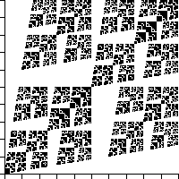

Fourth Homework Set Answers
12. This fractal consists of
N = 4
pieces, two scaled by a factor of
r
1
= r
2
= 0.5,
and two scaled by a factor of
r
3
= r
4
= 0.4.
Because not all pieces have the same scaling factor, we use the Moran equation to compute the dimension:
2⋅0.5
d
+ 2⋅0.4
d
= 1
This must be solved numerically, giving d = 1.75.

Return to
Homework 4 Practice
.